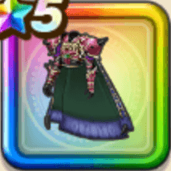

幻魔王の鎧上
攻略班 9.0点 / ヒャド属性耐性+5%デスタムーアへの耐性+10%イオ属性耐性+5%ドルマ属性耐性+5%イオ属性耐性+5%【ニンジャ】スキルの斬撃・体技・ブレスダメージ+2%【夜間】メラ属性ダメージ+2%メラ属性ダメージ+8%
くわしい特徴
【レベル別習得スキル】 Lv1ヒャド属性耐性+5% Lv3デスタムーアへの耐性+10% Lv5きようさ+10 Lv8イオ属性耐性+5% Lv10【ニンジャ】スキルの斬撃・体技・ブレスダメージ+2% Lv12【夜間】メラ属性ダメージ+2% Lv15メラ属性ダメージ+8% Lv18ドルマ属性耐性+5% Lv20すばやさ+6 Lv23イオ属性耐性+5% Lv25守備力+5 【限界突破スキル】 1凸攻撃力+10 2凸すばやさ+12 3凸守備力+10 4凸さいだいHP+12